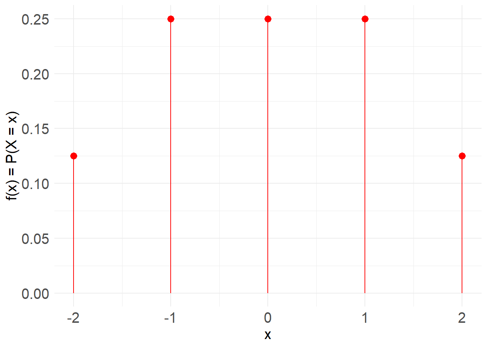
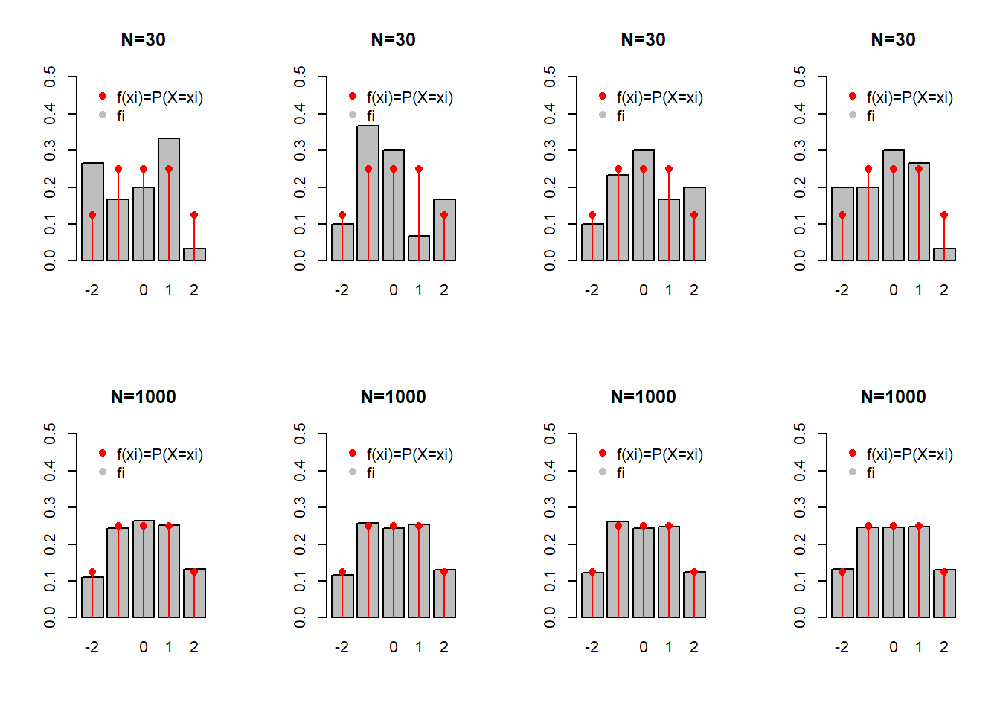
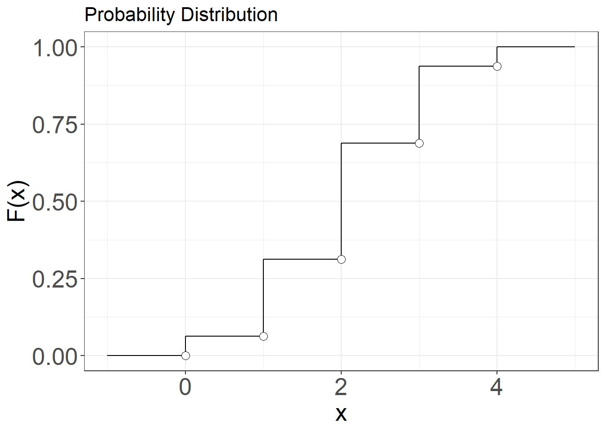

Chapter 5 Discrete Random Variables
Random experiments are better understood as a two-stage processes. The first stage involves the selection of a subject, the production of a specimen, or the execution of a process, which we refer to as the observation unit. The second stage is the observation or measurement process performed on the observation unit. As a result, we acquire a characteristic or quantity from a single run of the experiment. If we perform more than one type of measurement, the observation becomes the joint result of all the measurements. For instance, the pressure, volume, and temperature of a gas.
Randomness arises in both stages. The production of an observation unit is typically subject to uncontrolled conditions, making each unit not identical to another. The experimental conditions are expected to remain consistent every time we perform the experiment so that the randomness originates from the same sources. However, if the selection of a subject is not genuinely representative of the experimental conditions, the repetition of the experiment becomes biased, and the relative frequencies may fail to converge to the expected probabilities. For example, selecting a depressed patient from a clinic introduces bias when generalizing the misophonia condition to the broader population.
Randomness also arises from measurement error. Even if the production of observation units occurs under identical conditions, additional variation in experimental outcomes may stem from the limitations of the measuring instrument. Consider, for example, measuring the position of a star in the sky using an old sextant. While the observation unit, the star, remains the same and the same sextant is used in each measurement repetition, the outcomes vary due to the instrument’s precision.
In this chapter, we focus on the final outcome of a random experiment, specifically the acquisition of a numerical value from an observation unit. We define a random variable as a representation of the entire observation process, encompassing the production of the observation unit, the performance of the measurement, and the acquisition of the final numerical value.
We begin with discrete numerical outcomes, defining the probability mass function along with its main properties, such as mean and variance. Building on the abstraction of relative frequencies into probabilities, we further define the probability distribution as the limiting case of the relative cumulative frequency.
5.1 Definition of a Random Variable
A random variable is a symbol that represents the process of acquiring a numerical outcome from the execution of a random experiment. We write the random variable in capitals (i.e. \(X\)). Think of it as the recipe to obtain an observation from the experiment. It is not the observation, it is the procedure to obtain it. A random variable can be the weight of an animal, that is the process of measuring its mass. \(10.5Kg\) is one observation.
Definition:
A random variable is a function that assigns a real number to an event from the sample space of a random experiment.
Remember than an event can be an outcome or a collection of outcomes.
When the random variable takes a value, it indicates the realization of an event and the production of a number from the random experiment.
Example (Switch)
If \(X \in \{0,1\}\), we then say \(X\) is a random variable that can take the values \(0\) or \(1\). \(X\) may represent the process to determine the state of a switch and encoding it as a number. If we see light in the room, the switch is on and then we assign \(X=1\) to the state of the switch. If we see no light, the switch is off and and the variable takes the value \(X=0\).
5.2 The value of a random variable
We make the distinction between variables in the model space with capital letters, as abstract entities (the state of a switch, the color of a car, the sex of a patient), and the realization of a particular outcome (whether the light of my office is on right now, the red color of my car, the first patient on the hospital today was male). For instance, we say that
\(X=1\) is the event of observing the random variable \(X\) with the value of \(1\)
\(X=2\) is the event of observing the random variable \(X\) with the value of \(2\)
…
In general:
- \(X=x\) is the event of observing the random variable \(X\) (big \(X\)) with value \(x\) (little \(x\)).
We use lower case letters to indicate the numerical outcome of an experiment that is obtained one day in the lab.
5.3 Probability of random variables
We are interested in assigning probabilities to the values that random variable can take.
For instance, for the dice, we will write the probability table as
\[ \begin{array}{cc} \mathbf{x} & \mathbf{P_i} \\ 1 & P(X=1) = 1/6 \\ 2 & P(X=2) = 1/6 \\ 3 & P(X=3) = 1/6 \\ 4 & P(X=4) = 1/6 \\ 5 & P(X=5) = 1/6 \\ 6 & P(X=6) = 1/6 \\ \end{array} \]
where we explicitly write down the events that the variable takes at given outcome value \(X=x\).
If \(X\) is observing the number after rolling a dice, then \(P(X=1)\) is the probability that the roll of a dice gives an outcome value of \(1\).
5.4 Probability functions
Because (little) \(x\) is a numerical quantity, the probabilities of the random variable can be plotted against the outcomes \(x\)

or written as the mathematical function
\[f(x)=P(X=x)=1/6\] Therefore, the probabilities of a random experiment can be given in table, in a plot or as a function.
5.5 Probability mass functions
We can create any type of probability function if we satisfy Kolmogorov’s probability rules.
For a discrete random variable \(X \in \{x_1 , x_2 , .. , x_m\}\), a probability mass function that is used to compute probabilities
- \(f(x_i)=P(X=x_i)\)
is always positive
- \(f(x_i)\geq 0\)
and its sum over all the values of the variable is \(1\):
- \(\sum_{i=1}^m f(x_i)=1\)
Where \(m\) is the number of possible outcomes.
Note that the definition of \(X\) and its probability mass function is general without reference to any experiment. The functions live in the model (abstract) space.
Example (Physical simulator)
In one urn put \(8\) balls following the instructions:
- mark \(1\) ball with number \(-2\)
- mark \(2\) balls with number \(-1\)
- mark \(2\) balls with number \(0\)
- mark \(2\) balls with number \(1\)
- mark \(1\) ball with number \(2\)
And consider performing the following random experiment: Take one ball and read the number.
From the classical probability, we can write the probability table, for which we do not need to run any experiment
\[ \begin{array}{cc} \mathbf{x} & f(x)=P(X=x) \\ -2 & 1/8 \\ -1 & 2/8\\ 0 & 2/8 \\ 1 & 2/8 \\ 2 & 1/8 \\ \end{array} \]
The plot is

\(X\) and \(f(x)\) are mathematical objects that may or may not describe the probabilities of real random experiments. We have the freedom to construct them as we want as long as we respect their definition.
The urn experiment is an important concept. It is a simple and flexible random experiment that allows us to recreate experiments almost any kind of probability mass function. We refer to it as a physical simulator. By adjusting the number of balls, we can match the propensity of an outcome to a given precision. For example, if the probability of an outcome “black” is \(3/5 = 0.6\), then placing \(3\) black balls in an urn of \(5\) total balls achieves a perfect match. However, if the probability is \(2/\pi \approx 0.6366198\), a reasonable approximation could involve placing \(636\) black balls in a total of \(1000\). Clearly balls can be labeled with more than one outcome type (“black” and “spotted”), recreating the measurement of two different quantities on an observation unit.
A key feature of simulators is that the probabilities of the experiment are determined by its design. Once we conceive the simulator, there is no need to run the experiment to know the propensities of the outcomes. The usefulness of the simulator is to recreate the observations of the experiment. If the probabilities of the outcomes are known, the simulator allows us to inspect the likely observations of a single run or suitable finite runs of the random experiment. Clearly, a simulator is apt if we run it a large number of times (replacing each time the extracted ball back in the urn) and find that the relative frequencies it produces are close to the probabilities on which it is defined.
The simulator works from the abstract to the concrete. An essential point, however, is that only physical simulators can recreate true randomness. The production of randomness is a feature of the physical world. Mathematical functions, on the other hand, cannot produce true randomness. Instead, we use computing software to create simulators based on complex mathematical functions whose outcomes are difficult to predict. These are pseudo-random simulators, which effectively mimic a real physical simulator when the generating functions are sufficiently obscured.
5.6 Mean or expected value
Le us start again from a random experiment. From its relative frequencies, we defined the central tendency (average), dispersion (sample variance) and the frequency distribution (\(F_i\)) the experiment data. How are these quantities defined for probabilities, understood as frequencies at \(n=\infty\)?.
For a discrete random variable, we have \[lim_{n\rightarrow \infty} f_i=f(x_i)\] as \(f(x_i)=P_i\). The relative frequencies thus approach to the probability mass function. If we think in terms of plots, then the heights of bar plot (grey buildings) approach to the heights of the probability mass function (red needles), as we collect more data. For the urn (pseudo-random) simulator example above, we observe that the frequencies for four simulations with \(n=1000\) draws of the balls are consistently closer to the probabilities than the simulations with \(n=30\) draws.

When we discussed summary statistics of data, we defined the center of the observations as a value around which the observations are concentrated. We used the average to measure the center of mass of the data. The average can be computed from the relative frequencies for discrete random variables as
\(\bar{x}= \frac{1}{n} \sum_{i=1}^n x_i = \sum_{i=1}^m x_i \frac{n_i}{n}=\) \[\sum_{i=1}^m x_i f_i\]
Note the change from the number of observations \(n\) to the number of outcomes \(m\) in the summation.
Definition
The mean (\(\mu\)) or expected value of a discrete random variable \(X\), \(E(X)\), with mass function \(f(x)\) is given by
\[ \mu = E(X)= \sum_{i=1}^m x_i f(x_i) \]

It is the center of mass of the probabilities: The point where the probability loading on a road are balanced.
From the definition we have
\[\bar{x} \rightarrow \mu\] in the limit when \(n \rightarrow \infty\) as the frequency tends to the probability mass function \(f_i \rightarrow f(x_i)\). Note that the expected value is an abstract property of the random experiment. If the probabilities of the random variable are known for all its values, then \(\mu\) is fully determined with no need to run the experiment.
While the probabilities are the propensity of the outcomes, the mean is the value at which the outcomes will gather around. Note that the expression “expected value” is apt, as it is a statement about the future run of the experiment. In the next run of the random experiment, we expect the observation to be close to \(\mu\).
Example
Find the mean of \(X\) if its probability mass function \(f(x)\) is given by
\[ \begin{array}{cc} \mathbf{x} & f(x) \\ 0 & 1/16 \\ 1 & 4/16 \\ 2 & 6/16 \\ 3 & 4/16 \\ 4 & 1/16 \\ \end{array} \]

\[ \mu =E(X)=\sum_{i=1}^m x_i f(x_i) \]
\(E(X)=0 \times \frac{1}{16} + 1 \times \frac{4}{16} + 2 \times \frac{6}{16} + 3 \times \frac{4}{16} + 4 \times \frac{1}{16} =2\)
The mean \(\mu\) is the center of mass of the probability mass function. It does not change. It is a property of the random experiment. However, the average \(\bar{x}\) is the center of mass of the observations (relative frequencies). It changes with different data. While the mean is the value at which the observations will gather, the average is the value at which the observations gathered in the past.
5.7 Variance
While we expect the observations to gather about \(\mu\), we also expect them to distance from it due to their random behavior. When we discussed summary statistics of data, we defined the spread of the observations as an average distance from the data average.
Definition
The variance, written as \(\sigma^2\) or \(V(X)\), of a discrete random variable \(X\) with mass function \(f(x)\) is given by
\[\sigma^2 = V(X)= \sum_{i=1}^m (x_i-\mu)^2 f(x_i)\] \(\sigma=\sqrt{V(X)}\) is called the standard deviation of the random variable and it is the expected distance from the mean of the next observation of the random experiment.
The variance is the spread of the probabilities about the mean. That is the moment of inertia of probability loadings about the center of mass.
Example
What is the variance of \(X\) if its probability mass function \(f(x)\) is given by the previous example?
\[ \begin{array}{cc} \mathbf{x} & f(x) \\ 0 & 1/16 \\ 1 & 4/16 \\ 2 & 6/16 \\ 3 & 4/16 \\ 4 & 1/16 \\ \end{array} \]
\[\sigma^2 =V(X)=\sum_{i=1}^m (x_i-\mu)^2 f(x_i)\]
\(V(X)=(0-2)^2 \times \frac{1}{16} + (1-0)^2 \times \frac{4}{16} + (2-2)^2 \times \frac{6}{16} + (3-2)^2 \times \frac{4}{16} + (4-2)^2 \times \frac{1}{16} =1\)
\[V(X)=\sigma^2=1\] \[\sigma=1\]
5.8 Probability functions for functions of \(X\)
In many occasions, we will be interested in outcomes that are function of the random variables. Perhaps, we are interested in the square of the number of flu infections, or on the square root of the number of emails in an hour.
Definition
For any function \(h\) of a random variable \(X\), with mass function \(f(x)\), its expected value is given by
\[ E[h(X)]= \sum_{i=1}^M h(x_i) f(x_i) \]
This is an important definition that allows us to prove three frequently used properties of the mean and variance:
The mean of a linear function is the linear function fo the mean: \[E(a\times X +b)= a\times E(X) +b\] for \(a\) and \(b\) scalars (numbers).
The variance of a linear function of \(X\) is:\[V(a\times X +b)= a^2\times V(X)\]
The variance about the origin is the variance about the mean plus the mean squared: \[E(X^2)=E(X)^2 + V(X)\]
The last equation is fundamental in mathematical statistics. It is the Pythagoras theorem for statistics where the expected total variation of the data from \(0\) (hypotenuse=\(E(X^2)=E[(X-0)^2]\)) is the sum of the variation of the mean (\(E(X)^2\)) and the variation about the mean (\(V(X)=E[(X-\mu)^2]\)). These last two variations are orthogonal, introducing important geometrical properties into statistical analysis. For more practical applications, the property is useful to compute the variance of a random variable.
Example
What is the variation of \(X\) about the origin, \(E(X^2)\), if its probability mass function \(f(x)\) is given by
\[ \begin{array}{ccc} \mathbf{x} &\mathbf{x^2} & f(x) \\ 0 & 0 &1/16 \\ 1 & 1 &4/16 \\ 2 & 4 &6/16 \\ 3 & 9 &4/16 \\ 4 & 16 &1/16 \\ \end{array} \]
\[E(X^2) =\sum_{i=1}^m x_i^2 f(x_i)\]
\(E(X^2)=0^2 \times \frac{1}{16} + 1^2 \times \frac{4}{16} + 2^2 \times \frac{6}{16} + 3^2 \times \frac{4}{16} + 4^2 \times \frac{1}{16} =5\)
We can also verify:
\[E(X^2)=V(X)+E(X)^2\]
\(5=1+2^2\)
5.9 Probability distribution
When we discussed summary statistics of data, we also defined the frequency distribution (or the relative cumulative frequency) \(F_x\). \(F_x\) is an important quantity because it is a function on the continuous range of \(x\), even if the outcomes are discrete.
Definition:
The probability distribution function of a random variable \(X\) is defined as
\[F(x)=P(X\leq x)=\sum_{x_i\leq x} f(x_i) \]
That is the accumulated probability up to a given value \(x\)
Therefore, \(F(x)\)
- is bounded: \(0\leq F(x) \leq 1\); and
- always increases: If \(x \leq y\), then \(F(x) \leq F(y)\)
Example
For the probability mass function:
\[ \begin{array}{cc} \mathbf{x} & f(x) \\ 0 & 1/16 \\ 1 & 4/16 \\ 2 & 6/16 \\ 3 & 4/16 \\ 4 & 1/16 \\ \end{array} \]
The probability distribution is:
\[ F(x)= \begin{cases} 0, & x \leq 0\\ 1/16,& 0 \leq x < 1\\ 5/16,& 1\leq x < 2\\ 11/16,& 2\leq x < 3\\ 15/16,& 3 \leq x < 4\\ 16/16,& 4 \leq x\\ \end{cases} \]
For\(X \in \mathbb{R}\)

5.10 Probability function and probability distribution
The probability function and distribution are equivalent. They encode the same information. We can get one from the other and vice-versa
\[f(x_i)=F(x_i)-F(x_{i-1})\]
with
\[f(x_1)=F(x_1)\]
for \(X\) taking values in \(x_1 \leq x_2 \leq ... \leq x_n\)
Example
From probability distribution:
\[ F(x)= \begin{cases} 1/16,& \text{if } 0 \leq x < 1\\ 5/16,& 1\leq x < 2\\ 11/16,& 2\leq x < 3\\ 15/16,& 4\leq x < 5\\ 16/16,& x \leq 5\\ \end{cases} \]
We can obtain the probability mas function.
\(f(0)=F(0)=1/16\)
\(f(1)=F(1)-f(0)=5/32-1/32=4/16\)
\(f(2)=F(2)-f(1)-f(0)=F(2)-F(1)=6/16\)
\(f(3)=F(3)-f(2)-f(1)-f(0)=F(3)-F(2)=4/16\)
\(f(4)=F(4)-F(3)=1/16\)
5.11 Quantiles
Finally, we can use the probability distribution \(F(x)\) to define the median and the quartiles of the random variable \(X\).
In general, we define the q-quantile as the value \(x_{q}\) under which we have accumulated \(q\times 100\%\) of the probability
\[q=\sum_{x_i\leq x_q} f(x_i) = F (x_q)\]
- The median is the value \(x_{0.5}\) such that \(q=0.5\)
\[F(x_{0.5})=0.5\] or
\[x_{0.5}=F^{-1}(0.5)\]
- The \(0.05\)-quantile is the value \(x_{0.05}\) such that \(q=0.05\)
\[x_{0.05}=F^{-1}(0.05)\]
- The \(0.25\)-quantile is first quartile the value \(x_{0.25}\) such that \(q=0.25\)
\[x_{0.25}=F^{-1}(0.25)\] In the plots for the probability distribution \(F(X)\), the median is the distance \(x\) at which \(F(x)\) has gone up \(50\%\) of the height. And the first quartile is the distance at which \(F(x)\) has gone up \(25\%\) of the height.
5.12 Summary
This is a graphical summary of the correspondence between abstract quantities in the model space, defined on the outcomes, and observed quantities in the data space, defined on the observations.

\[ \begin{array}{|c|c|} \hline \textbf{Data (Observed)} & \textbf{Model (Abstract)} \\ \hline f_i=\frac{n_i}{n} & f(x_i)=P(X=x_i) \\ \hline F_i=\sum_{k \leq i} f_k & F(x_i)=P(X \leq x_i) \\ \hline \bar{x}=\frac{\sum_{j=1}^n x_j}{n} & \mu= \sum_{i=1}^m x_i f(x_i)\\ \hline s^2=\frac{\sum_{j=1}^n (x_j-\bar{x})^2}{N-1} & \sigma^2=\sum_{i=1}^m (x_i-\mu)^2 f(x_i) \\ \hline s & \sigma \\ \hline m_2=\frac{\sum_{j=1}^n x_j^2}{n} & E(X^2)=\sum_{i=1}^m x_i^2 f(x_i) \\ \hline \end{array} \]
Note that:
- \(j=1...n\) index the observations of the random variable \(X\)
- \(i=1...m\) index the outcomes of the random variable \(X\).
Here is a useful list of properties
- \(\sum_{i=1}^m f(x_i)=1\)
- \(f(x_i)=F(x_i)-F(x_{i-1})\)
- \(E(a\times X +b)= a\times E(X) +b\); for \(a\) and \(b\) scalars.
- \(V(a\times X +b)= a^2\times V(X)\)
- \(E(X^2)=V(X)+E(X)^2\)
5.13 Questions
1) For a probability mass function is not true that
\(\qquad\)a: the addition of their image values is 1; \(\qquad\)b: its values can be interpreted as probabilities of events; \(\qquad\)c: it is always positive; \(\qquad\)d: cannot take value 1;
2) A value of a random variable is
\(\qquad\)a: an observation of a random experiment; \(\qquad\)b: the frequency of an outcome of a random experiment; \(\qquad\)c: an outcome of a random experiment; \(\qquad\)d: a probability of an outcome;
3) The estimated value of a probability \(\hat{P_i}\) is equal to the probability \(P_i\) when the number of repetitions of the random experiment is
\(\qquad\)a: large; \(\qquad\)b: infinite; \(\qquad\)c: small \(\qquad\)d: zero;
4) If a probability mass function is symmetric around \(x=0\)
\(\qquad\)a: The mean is lower than the median; \(\qquad\)b: The mean is greater than the median; \(\qquad\)c: The mean and the median are equal; \(\qquad\)d: The mean and the median are different from 0;
5) The mean and variance
\(\qquad\)a: are inversely proportional; \(\qquad\)b: are expected values of functions of \(X\); \(\qquad\)c: of a linear function are the linear function of the mean and the linear function of the variance; \(\qquad\)d: change when we repeat the random experiment;
5.14 Exercises
5.14.0.1 Exercise 1
Consider the following random variable \(X\) over the outcomes
\[ \begin{array}{cc} \textbf{Outcome} & x \\ a & 0 \\ b & 0 \\ c & 1.5 \\ d & 1.5 \\ e & 2 \\ f & 3 \\ \end{array} \]
If each outcome is equally probable then what is the probability mass function of \(x\)?
Find:
- \(P(X>3)\)
- \(P(X=0\, \cup \, X=2 )\)
- \(P(X \leq 2)\)
5.14.0.2 Exercise 2
Given the probability mass function
\[ \begin{array}{cc} x & f(x) \\ 10 & 0.1 \\ 12 & 0.3 \\ 14 & 0.25 \\ 15 & 0.15 \\ 17 & ? \\ 20 & 0.15 \\ \end{array} \]
- what is its expected value and standard deviation? (A: 14.2; 2.95)
5.14.0.3 Exercise 3
Given the probability distribution for a discrete variable \(X\)
\[ F(x)= \begin{cases} 0, & x < -1 \\ 0.2,& x \in [-1,0)\\ 0.35,& x \in [0,1)\\ 0.45,& x \in [1,2)\\ 1,& x \geq 2\\ \end{cases} \]
- find \(f(x)\)
- find \(E(X)\) and \(V(X)\) (A:1; 1.5)
- what is the expected value and variance of \(Y=2X+3\) (A: 6)
- what is the median and the first and third quartiles of \(X\)? (A:2,0,2)
5.14.0.4 Exercise 4
We are testing a system to transmit digital pictures. We first consider the experiment of sending \(3\) pixels and having as possible outcomes events such like \((0,1,1)\). This is the event of receiving the first pixel with no error, the second with error and third with error.
List in one column the sample space of the random experiment.
In the a second column assign the random variable that counts the number of errors transmitted for each outcome
Consider that we have a totally noisy channel, that is any outcome of three pixels is equally likely.
What is the probability of receiving \(0\), \(1\), \(2\), or \(3\) errors in the transmission of \(3\) pixels? (A: 1/8; 3/8; 3/8; 1/8)
Sketch the probability mass function for the number of errors
What is the expected value for the number of errors? (A:1.5)
What is its variance? (A: 0.75)
Sketch the probability distribution
What is the probability of transmitting at least 1 error? (A:7/8)